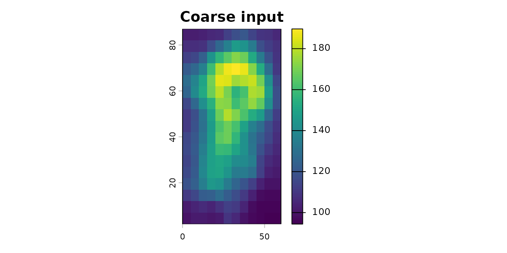
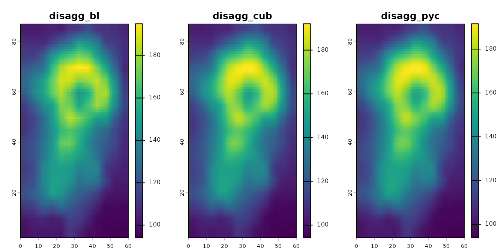

The terraces package provides aggregation-consistent
disaggregation methods for terra rasters. Unlike standard
bilinear interpolation, when applied to a coarse raster, these methods
produce a fine-scale result that can be re-aggregated to recover the
original coarse values. See the README for
background, and the method-comparison
article for a more detailed exploration of how these methods work on
real elevation data.
This vignette walks through basic usage.
library(terra)
#> terra 1.9.27
library(terraces)
#>
#> Attaching package: 'terraces'
#> The following object is masked from 'package:stats':
#>
#> kernelDisaggregating a coarse raster
We’ll use the volcano dataset that ships with base R as
a coarse input:

Each of the three methods takes the coarse raster and a disaggregation factor:
fine_bl <- disagg_bl( coarse, fact = 5) |> setNames("disagg_bl")
fine_cub <- disagg_cub(coarse, fact = 5) |> setNames("disagg_cub")
fine_pyc <- disagg_pyc(coarse, fact = 5) |> setNames("disagg_pyc")
plot(c(fine_bl, fine_cub, fine_pyc), nr = 1)
The three methods produce qualitatively similar output but differ in their smoothness priors. See the README or the method-comparison article for guidance on choosing between them.
Mapping the boundary band
The pre-sharpening methods (disagg_bl() and
disagg_cub()) have a small boundary band where mass
preservation degrades slightly. You can map this affected zone with
edge_effects():
ee <- edge_effects(coarse, fact = 5, method = "cubic")
plot(ee, main = "Edge-effect zone (cubic method)")Values 1 and 2 indicate cells affected by the pre-sharpening filter
and the boundary interpolation fallback, respectively. For studies that
care about precision near a particular region of interest, the cleanest
practical workaround is to disaggregate over a larger domain that
extends beyond the study area, then crop the result — this places the
edge effects safely outside the cells you actually use. Alternatively,
if you need exact mass preservation everywhere — for example, when
tiling mosaics or when extending the domain isn’t possible — use
disagg_pyc(), which can be slower for large rasters but
isn’t subject to these effects.
Verifying mass preservation
Re-aggregating the fine output should recover the original coarse values.
To compare methods fairly, we’ll exclude the boundary band where the pre-sharpening methods are known to have degraded accuracy. We build a coarse-resolution mask flagging any coarse cell that contains a level-2 boundary fine cell:
coarse_mask <- aggregate(ee, 5, fun = "max")
max_error <- function(fine, coarse, mask){
back <- aggregate(fine, fact = 5, fun = "mean")
max(abs(values(mask(coarse - back, mask, maskvalues = 2))), na.rm = TRUE)
}For disagg_pyc(), residuals are at machine precision —
mass is preserved exactly by construction, with or without the mask:
max_error(fine_pyc, coarse, coarse_mask)
#> [1] 8.526513e-14For disagg_bl() and disagg_cub(), interior
residuals are very small (~6 cm on a DEM covering a 100 m range), but
are nonzero due to finite-radius kernel truncation:
max_error(fine_bl, coarse, coarse_mask)
#> [1] 0.06369263For comparison, here’s the same check with standard bilinear
disaggregation using terra::disagg(). Residuals here are
orders of magnitude larger — standard bilinear isn’t
mass-preserving:
fine_std <- terra::disagg(coarse, fact = 5, method = "bilinear")
max_error(fine_std, coarse, coarse_mask)
#> [1] 5.277122Learn more
- The README explains the package’s design and helps you choose between methods.
- The method-comparison article works through a detailed analysis with a real DEM, comparing methods based on their assumptions, accuracy, and computational speed.
- Function help:
?disagg_bl,?disagg_cub,?disagg_pyc,?edge_effects.